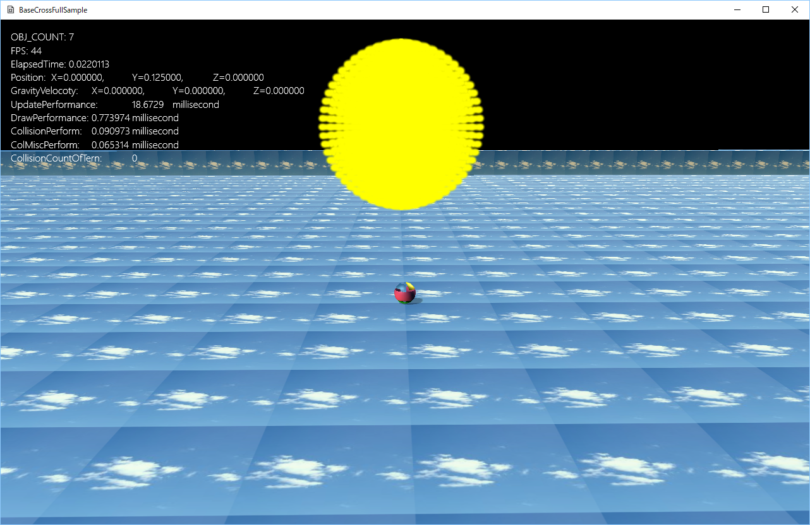
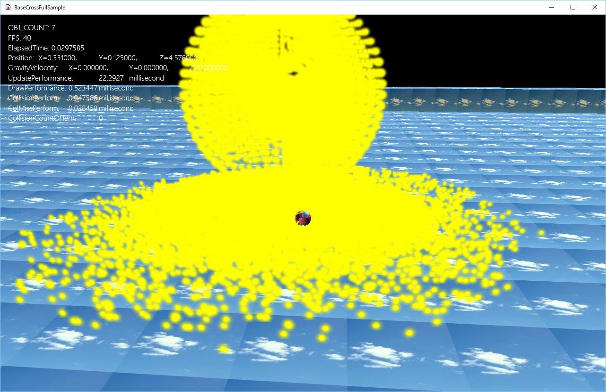

１５．シェーダーを自作する（Dx11版）
１５０３．CSとGSで計算する
このサンプルは
FullSample503というディレクトリに含まれます。
BaseCrossDx11.slnというソリューションを開くと
Dx11版が起動します。
このサンプルは現在Dx12版はありません。

図1503a
このサンプルは
フルサンプル502を
ジオメトリシェーダ（CS）も使う形に書き直したものです。
プレイヤーが上記の回転する球に当たると、各点が飛び散ります。それらは床に到達するとそこから動かなくなります。
前項と違うところは、より大量に点があるところです

図1503b